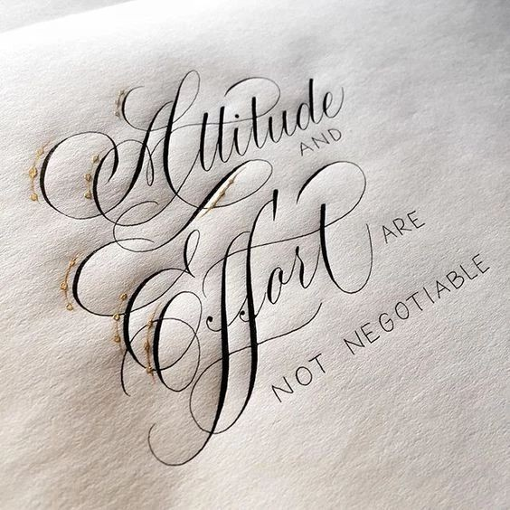

Calligraphy is the artistic process of forming beautiful symbols by hand and arranging them in a way that inscribes words that possess integrity, harmony, some sort of ancestry and rhythm. In this definition, integrity represents admirable proportions and design of letters and symbols in calligraphy images. Harmony is a pleasing relationship between the words, characters and single letter's elements. Ancestry refers to the preservation of heritage of letter-shapes, materials and techniques which calligraphers use. Finally, rhythm is a deliberate repetition in calligraphic writing that creates feelings of pattern and emphasis within the eyes of the viewer. On their own, any of these factors do not amount to a valid calligraphic discipline - only when they are all assembled together does the entire process start to take on a shape of calligraphy.
Many calligraphers agree that there is another ingredient in the mix of perfect lettering and that is creative fire.[1] A bit puzzling and nebulous, this can be explained as a slightly mysterious life and individuality of any piece of art. This individual stamp of the calligrapher’s personality on the work is ultimately what makes calligraphy a valid member of arts, it's the key aspect that separates it from conventional penmanship and any machine standardized letter form. Calligraphy aims to produce a reaction, just like any quality piece of sculpture or painting, its goals are to invoke a deeper meaning and communicate with the viewer on both the linguistic and creative level. Although a bit too metaphorical to be considered a valid definition, many experts recognize that reading calligraphy is the closest way one can get to hearing music with eyes. Interestingly, this may be the most precise explanation of what calligraphic creative fire actually is.
What is Calligraphy?
August 29, 2023 byHarriet Maher
Sharing is caring!
Are you curious about the elegant and intricate art of calligraphy? Do you wonder about the purpose behind the time and effort put into creating these beautifully written words?
Look no further, as this article will introduce you to the world of calligraphy and explore its purpose.
From its historical origins to its modern-day uses, you’ll gain a deeper understanding of the value and significance of calligraphy. So, let’s dive into the fascinating world of calligraphy together!
These are the topics we’ll be exploring in this guide.
Table of Contents
What is Calligraphy?
What is the Purpose of Calligraphy?
Why is it Called Calligraphy?
How did Calligraphy Originate?
What are the Main Types/Styles of Calligraphy?
12 Calligraphy Examples
What is the Difference Between Lettering and Calligraphy?
Final Remarks
Frequently Asked Questions
Is calligraphy and cursive the same?
Is calligraphy the same as writing?
Can calligraphy be done with a normal pen?
What is Calligraphy?
The word ‘calligraphy’ is a combination of two Greek words: kallos (beauty) and graphein (to write). So, in other words, we can say that calligraphy refers to writing in aesthetically pleasing forms.
Modern forms of written communication — emails and text messages — have eliminated the need for handwritten notes and letters.
Technology may save time and effort in communicating more clearly, but it cannot replace the human need for beauty.
Calligraphy is one such form of beauty: the beauty in writing.
It is a visual art form that focuses on manipulating symbols and letters to produce beautiful writing.
According to Claude Mediaville, calligraphy is the “art of giving form to signs in an expressive, harmonious, and skillful manner.” —
(Source: Calligraphy: From Calligraphy to Abstract Painting.)
calligraphy example
calligraphy example
What is the Purpose of Calligraphy?
As I mentioned in the previous section, calligraphy is a visual art form. Its purpose is the same as any other art form, i.e. to evoke an artistic reaction in the viewer.
The purpose of calligraphy is to “show integrity, harmony, some sort of ancestry, rhythm and creative fire.”
Calligraphy is not like ordinary writing meant for ordinary communication. Calligraphy is art in the sense that its purpose is to produce aesthetic writing.
The emphasis, therefore, is not on readability or even communication but on finding the proper pen movement or brush strokes to express one’s artistic creativity.
Calligraphy has also played a significant role in the advancement of the written language throughout the world.
Why is it Called Calligraphy?
Calligraphy literally means beautiful handwriting or elegant penmanship.
It emphasizes the writing process and not the decorative aspects. Calligraphy achieves its beauty through elegant letterforms.
Why is it called Calligraphy

calligraphy example
The Greeks coined the term calligraphy first, which meant beautiful writing in their language, and that is how it came to be known as calligraphy.
How did Calligraphy Originate?
The origination of calligraphy is debated among paleographers and historians. However, it is believed that calligraphy originated among the Phoenicians around 1200 BC.
After that, it is believed to have been taken up by the Greeks who passed it on to the Romans.
The Romans were the ones who really advanced calligraphy into an accessible art form leading to its adoption by the wider Roman community.
Another theory singles out the Shang dynasty of China as its originator. The Chinese have a unique style of calligraphy where, instead of letters, they use symbols and characters.
To learn some more about the history of calligraphy, we recommend checking out this video by Lorin Marmion:
What are the Main Types/Styles of Calligraphy?
There are numerous types of calligraphy, but all these variations or hands broadly fall into these three main styles:
1. Western Calligraphy
Based on the Latin text, Western calligraphy is widely used in the Western world on cards, invitations, inscriptions on certificates, et cetera.
Western Calligraphy example
Western calligraphy
Western calligraphy is one of the most advanced forms of calligraphies spanning many sub-styles.
2. Oriental Calligraphy2. Oriental Calligraphy
Oriental calligraphy is mainly used in East Asia, primarily in China, Japan, and Korea.
Oriental Calligraphy example
Oriental calligraphy
The Oriental calligraphy has a meditative aspect to it. The letters are written with a broader and longer brush requiring more movement than in other forms of calligraphy.
3. Islamic Calligraphy
Islamic calligraphy is associated chiefly with Islamic spirituality.
Islamic Calligraphy example
Islamic calligraphy
It is also sometimes called Arabic calligraphy — because the scribes write in Arabic letters — but this geographical or ethnic specification is not true because many Islamic calligraphers weren’t Arab.
Islamic calligraphy is also a geometrical and artistic expression of the beauty of God. This type of calligraphy can be found in Islamic architecture as well.
12 Calligraphy Examples
Here are examples of various calligraphy styles and works:
1. Copperplate Calligraphy
Copperplate calligraphy is known for its elegant and flowing script. It’s often used for formal invitations and certificates.
Gothic calligraphy features intricate and angular letterforms. It was commonly used in medieval manuscripts and has various sub-styles like Textura and Fraktur.
3. Italic Calligraphy
Italic calligraphy is characterized by its slanted and cursive letterforms. It’s considered more legible than some other calligraphy styles.
4. Uncial Calligraphy
Uncial calligraphy originated in ancient manuscripts and is known for its rounded and open letterforms.
5. Spencerian Script
Spencerian script is a 19th-century American style known for its ornate and graceful curves. It’s often associated with old American documents.
6. Brush Calligraphy
Brush calligraphy uses a brush and ink to create thick and thin lines, resulting in dynamic and expressive lettering.
7. Arabic Calligraphy
Arabic calligraphy is highly regarded for its artistic and spiritual significance in Islamic culture. It has various styles, such as Naskh, Diwani, and Thuluth.
8. Chinese Calligraphy
Chinese calligraphy is a visual art form that uses brush and ink to create characters with varying strokes and styles. It’s considered a reflection of the writer’s personality.
9. Japanese Calligraphy (Shodo)
Japanese calligraphy, or shodo, emphasizes balance, rhythm, and fluidity. It’s an essential component of traditional Japanese culture.
10. Modern Calligraphy
Modern calligraphy is a contemporary take on traditional styles, often mixing different scripts and adding personal flair. It’s popular for weddings, branding, and art.
11. Kufic Calligraphy
Kufic calligraphy is one of the earliest Arabic script styles, known for its angular and geometric forms. It’s often used in architectural inscriptions.
12. Roman Capitals
Roman capitals are a classic calligraphy style characterized by bold and upright letterforms. They have been used in inscriptions and monuments.
What is the Difference Between Lettering and Calligraphy?
People often confuse lettering with calligraphy.
Calligraphy is known by many names, but the lettering is a specific way of drawing letters that may or may not be related to writing out the words at all.
Lettering is focused on the decorative aspects of drawing out each letter and how it lends to the aesthetics of the overall composition. In that way, it is much like illustration or drawing.
lettering example
lettering in calligraphy
On the other hand, as previously mentioned, Calligraphy is focused on the actual art of beautiful handwriting.
Individual strokes in calligraphy combine to form letters and words, but the purpose is to write letters.
The idea, therefore, is not drawing out the letters or decorating them with colors and shapes but writing in a creative way that is also aesthetically pleasing.
Aesthetics are equally important in both art forms, yet the process of achieving that is different.
Final Remarks
Handwriting may have lost its prestige due to the ubiquity of technology. However, calligraphy has survived the onslaught of technology by eking out highly niche domains for itself in arts and design.
Calligraphy encapsulates within it the story of the written word. Put simply; it is the art of beautiful handwriting that gives expression to our inner creativity.
Frequently Asked Questions
Is calligraphy and cursive the same?
No, calligraphy and cursive are not the same. Calligraphy is an artistic form of writing that focuses on beautiful and decorative lettering, whereas cursive is a style of handwriting that is typically faster and more practical for everyday use.
Is calligraphy the same as writing?
Calligraphy is a form of writing, but it is more focused on the artistic aspect of written language than on conveying information. The purpose of calligraphy is to create visually pleasing and aesthetically pleasing writing, whereas the purpose of regular writing is to convey a message or information.
Can calligraphy be done with a normal pen?
Calligraphy can be done with a normal pen, but traditional calligraphy often uses specialized tools such as a dip pen or brush to create the unique strokes and lines that define the art form. However, modern calligraphers have also adapted to using a variety of writing tools to achieve different effects and styles.